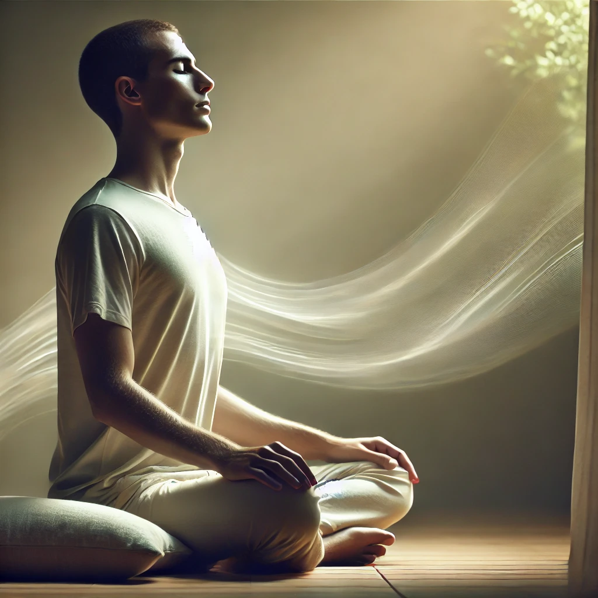

古里山卡尔冥想
古里山卡尔冥想是一种强大的集中技巧，主要作用于第三眼。该冥想由四个阶段组成，每个阶段持续15分钟。前两个阶段为第三阶段的自发体验做准备。据说，如果在第一阶段呼吸正确，冥想者会感觉自己像在古里山卡尔（珠穆朗玛峰）上。
练习此冥想： 下载音频并在以下步骤中跟随音频进行练习。
1. 第一步：15分钟
闭上眼睛坐下，通过鼻子深深吸气，充满肺部，尽可能长时间屏住呼吸。然后通过嘴轻轻呼气，尽可能长时间保持肺部空空的状态。重复这个循环。
2. 第二步：15分钟
恢复正常呼吸。保持目光柔和，注视一根火焰或闪烁的（频闪）蓝光。在此过程中保持静止。
注意1： 具有神经系统疾病如癫痫的患者切勿使用频闪灯进行此冥想。他们可以通过戴上眼罩完成第二阶段。
注意2： 冥想第二阶段的音乐有一种节奏感，其节拍是正常心跳的七倍。如果可能，闪烁的灯光应为每分钟490次的同步频闪灯。如果没有频闪灯，可以使用蜡烛。
3. 第三步：15分钟
闭上眼睛，站起来，保持身体松弛并具有接受性。体内的微妙能量将让你的身体在正常控制之外自行移动。不要有意识地移动，让动作自然而然地发生。

4. 第四步：15分钟
闭上眼睛，躺下并保持静止。进入宁静状态，让观察自然发生。